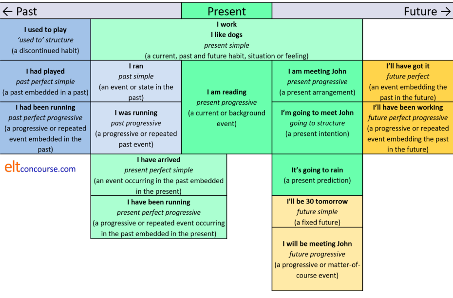
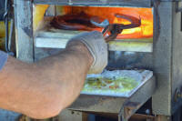
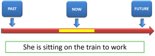
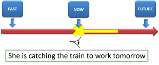
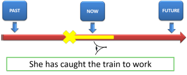
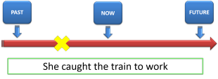
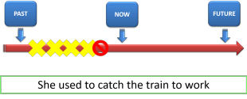
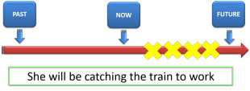

Unit 6: tenses in English

This Unit draws on the knowledge of verbs that you acquired in Unit
3 but focuses not on what the verbs mean but on the relationship
between events and actions and time.
So, from the outset, we'll get some basic ideas clear.
- Time
- Is not a concept dependent on the language you speak.
Cultures may view time differently (some imagining it moving from behind to in front of you or from below to above and many viewing time as a continuum moving along a straight line from left to right) but time itself is not a subject for language analysis.
Time can be a point:
What time does the train arrive?
a resource:
Do you have enough time?
or an occasion
Did you have a nice time? - Tense
- is a language term and strictly speaking refers to changes
made to the verb to show the relationship between the action,
state or event and the time at or in which it occurred.
It is possible to recognise that, for example:
She went home
refers to past time because of the form of the verb and that
She works here
refers to present time (and the past and the future, incidentally) because the form of the verb signals that with the -s ending on the verb.
We can also recognise that:
She is working in her office
almost certainly refers to the present moment because of the forms of the two verbs.
English has many tense forms but only, arguably, two tenses: past and non-past.
Other languages do things differently and many will have a special form of the verb to show a future tense and may make other changes to the forms of the language to signal their connection with time.
We will not be so strict in this Unit and the next and will refer to all forms of the verb which relate it to time as a tense form.
There is often a clear relationship between time and tense form so we can be reasonably sure that:
Mary left
refers to the past but that is not always the case because, for example:
What would he do if Mary left?
is a reference to a possible (but unlikely) future which uses the same tense form. - Aspect
- is a key concept in understanding English tenses because the
language depends heavily on forms of the verb to signal how the
speaker feels about the tense. We will use two of the most
important aspects of English tense forms to exemplify what is
meant:
- For example, if I say:
John arrived
I am referring to an action which took place in the past and is finished as far as I am concerned. I am saying nothing at all about where John is now.
However, if I say
John has arrived
then I am saying something very different. In effect, what I am saying is that although John's arrival is finished, the relevance of it to the present is clear to me and I want to communicate it. What English has done with this form of the verb is embed a past event in the present to make it clear that the past event has changed the way I view the present.
I might, therefore, go on to say:
... so now we can eat
or express whatever else in the present has been affected by John's past arrival. This is called the perfect aspect of the tense in English. - The other important aspect signalled by the
verb form in English is the progressive.
I can, for example, say:
John thinks he is Napoleon
and am making a statement about a present condition.
However, I can also say:
Shush. John is thinking
and now I am signalling the fact that I am talking about an action in progress. That's why it is called the progressive aspect.
- For example, if I say:
Now we are clear about that, we can get on with the Unit.
Here's the menu and, as usual, clicking on the yellow arrow at the
end of any section will return you to it.
| Section | Looking at: |
| A | Tenses in English What we call them and what they do. |
| B | Talking about always How we use verb tense forms to refer to anything non-past. |
| C | Talking about the present How we talk about current events and states. |
| D | Talking about the past How we talk about past events and states. |
| E | Talking about the future How we view prospective events and states. |
Section A: Tenses in English
The forms |
Here is a map which sets out
the main tense forms in English.
We say in English advisedly. The map would look very
different for any other language.
At any time, you can click on areas of the table that interest you
and you will be taken to a guide to that / those tense form(s).
The guides open in new tabs so just shut the page to return.
Those guides will tell you much more than this Unit can cover
because we are concerned with the fundamentals, not the details.

The chart and the following table is available as a PDF document.
The functions |
Here is a list of the tenses, explained in terms of their main functions and with a few examples.
What follows is not exhaustive but it covers the main uses of these
tenses in English.
The fourth column contains examples of the tenses used in the passive.
Unit 5 of this course explained how that is formed and used.
The fifth column contains examples of typical time words associated with
the tenses. It is not
the time words which determine the tense use, it is the concept of the
tense which determines appropriate time expressions.
| Tense | Main uses | Examples | Passive forms | Time adverbials |
| Present simple | Repeated or habitual events | I play tennis every Thursday | The work is done here | every
day seldom never sometimes usually rarely scarcely ever often |
| Generalisations | Flamingos eat fish | Bears are seen in these hills | ||
| Schedules | The train arrives at 8 | The class is timetabled to start at 9 | ||
| Present conditions (with some verbs only) representing continuous states | I am here He needs money She enjoys opera |
More resources are needed | ||
| Present progressive | Current events | He is writing a letter | A meeting is being held | today these days now this week tomorrow next Thursday |
| Current (background) events which may not be occurring now | He is writing a book He is studying French |
The house is being decorated | ||
| Currently arranged future | I'm seeing the doctor tomorrow | Tomorrow's meeting is being held in Room 6 | ||
| Past simple | Finished past action or condition | I ate at six I lived in Brazil I was happy |
Lunch was eaten at 6 | yesterday last week for years at two last month that summer at three then in those days up to then |
| Repeated or habitual past action | I always ate at six | All our holidays were taken there | ||
| Past progressive | Interrupted past action | I was eating when he rang | I was being told about it when she interrupted | |
| Progressive action at a particular time | I was eating at 7 | The car was being serviced then | ||
| Discontinued or temporary past habit | I was walking to work in those days | Calls were being handled by real people then | ||
| Parallel past events or events | It was raining and the wind was blowing
hard I was eating while she was watching television |
Trees were being uprooted and the roads were being flooded | ||
| Present perfect | A past embedded in the present which changes it | I have spoken to him (so now he
knows) I have learnt French (so now I can speak it) He has broken the pump (so now we can't use it) |
The pump has been broken | recently today this morning just already yet never ever |
| To describe past experiences which change the present | I have been to America (so I can speak about it) | It has been explained to me | ||
| Present perfect progressive | To emphasise the duration of a long event embedded in the present which changes it | I've been waiting for hours (and am really cold) | The road has been being repaired | for years since 1990 already all my life this month |
| Events embedded in the present which change it and are still current (this is actually continuous, not progressive) | She's been looking unwell for some time (and still is) | She has been being treated for it for weeks | ||
| A series of repeated past events embedded in the present which change it | He's been stealing money from his employer | Money has been being stolen from his employer | ||
| Past perfect | Completed events before others embedded in the past which explain it | I had already spoken to her before he asked | The tables had been laid before the guests arrived | already before beforehand yet when ... |
| Completed long events before others embedded in the past which explain it | It had rained for a week and the garden was muddy | The garden had been soaked by the rain | ||
| Past perfect progressive | (Un)completed long events before events in the past. A previous event is embedded in a past event | I had been playing chess for two hours before he arrived | The game had been being played | |
| To show a past result of a previous event. The previous event is embedded in the past event | He had been working too hard and was exhausted | The work had been being badly done so ... | ||
| To show a repeated event embedded in a past event | People had been forgetting to come so he sent a reminder | Meetings had been being forgotten so ... | ||
| Future simple or will future | A present promise or
offer The verb will represents willingness, not futurity |
I'll write soon, I'll do the washing
up There's no butter! I'll go and get some. |
That'll be done, I promise | soon at 2 o'clock in two days on Friday in 2030 soon after a while |
| Predictions based on experience or hunches | This will be difficult | The work won't please her | ||
| Certain absolute futures | I will be 45 on Monday | The clocks will be put forward | ||
| Future progressive | Potentially interrupted action | He'll be working when you come | The game will be being brought to an end when you arrive | |
| Progressive future event happening as a matter of course at a specific time | I'll be working at 7 | Your statements will be being taken | ||
| Future perfect | Completed event occurring before another and embedded within it which affects the second | He'll have finished the book by the time I want it | The book will have been written before the show | by then by Thursday by the time ... before ... beforehand |
| To show causal connections between future events | He'll have repaired the car and then we can use it | The car will have been repaired | ||
| States occurring before future events (certain verbs only) which change the second event | I'll have been at the hotel for a day or two before I can call you | The manager will have been asked the question many times | ||
| Future perfect progressive | Future progressive events embedded in later events which alter them | I will have been working for over two hours before you get here | The house will have been being decorated | |
| To show causal connections between long events and states | He'll have been travelling for ten hours and will be tired | The car will have been being driven too fast and ... | ||
| To show a repeated previous event embedded in a future event | I'll have been trying to call him for two hours by then | |||
| going to | To express current intention | I'm not going to put up with it | That is going to be done by me | tomorrow soon afterwards before 6 |
| To express prediction based on current evidence or experience | Look at those clouds. It's going to rain any minute | The party is going to be spoilt by the rain | ||
| used to | Past habits (generally only for events) | I used to drink lots of coffee I used to take my holidays in Spain |
This used to be done here | then in those days at that time |
Some of the examples in the fourth column are disputable and some
would aver that they are never used.
They are used, in fact, but only rarely.
The names of the tenses are quite logically constructed and that will help you to remember them. The only variation is whether people prefer to say simple present rather than present simple, for example, and the terms are all synonymous so it really doesn't matter.
- Tenses called simple forms are just that. They do not use other verbs to make the forms.
- Progressive forms refer to ongoing actions and we use a form of the verb be to make them.
- Perfect forms relate two time together (past in the past, past in the present, past in the future) and we use a form of the verb have to make them.
- The terms can be stacked so we get, e.g., past perfect progressive, present perfect progressive and so on.
- Some people refer to non-progressive forms as simple forms, but that is both unnecessary and confusing.
This unit will not consider all these forms because we are
reserving some for Unit 7 which considers aspect more thoroughly.
At the end of each section of this unit, there is a time-line
representation of the meaning of the tense form.
If you would like to see more of those, click
here (new tab).
 |
Learn moreIf you want to discover more now about tenses of all
kinds, go to: |
 |
Take a test |
Try a test
with the chart before you.
Then refresh the test and try again without using the chart to help you.
If you follow any other guides on this site to tense forms, you will
come across plenty more tests.

Section B: talking about always
 |
He works for a bank |
Here we are on quite safe ground because most languages use a
simple present tense for to talk about things which are true now,
were true in the past and will (probably) remain true.
We put in the probably there because as we all know the
future is by definition not certain and that, as we shall see later,
is a fact which determines how we think about it and which in turn
determines the forms we use to talk about it.
The form we use predominately in English is the simple form of
the verb. We do not, usually, use a form such as:
He is working in a bank
because that implies that the work is temporary rather than
permanent.
We also do not use a perfect form such as
He has worked in a bank
because that implies that he no longer does.
| We use the present simple tense to talk about: | for example |
| Repeated or habitual events | We take our holidays in France |
| Perennial truths | Water boils at 100°C |
| Generalisations | People respond well to sincerity |
| Schedules | The train leaves at six and takes 50 minutes to get to London |
| Mental states and abilities | Snakes frighten me |
The verb forms look like this, using the same example:
| Positive | Negative | Interrogative | Negative interrogative |
| I work You work He / She / It works We work They work |
I don't work You don't work He / She / It doesn't work We don't work They don't work |
Do I work? Do you work? Does he / she / it work? Do we work? Do they work? |
Don't I work? Don't you work? Doesn't he / she / it work? Don't we work? Don't they work? |
Apart from the fact that English is unusual in using the verb
do to make negatives and interrogatives in the simple present
tense (and the simple past) that all seems quite straightforward.
However, there are three issues to consider:
- In the simple present tense, English has a single inflexion,
either -s or -es added to the verb in the
third-person singular. No other form is inflected at all
so we use the base form of the verb.
Most languages have a more sophisticated set of inflexions which makes life comparatively simple when learning English but also means that learners very often forget to use the single inflexion that English does demand.
The exceptions are:- The verb be which is very irregular and changes from be to am, is and are
- The verb have which drops the final two letters in the second-person singular form and adds an -s to make has
- Some verbs, mostly those which refer to mental states,
wishes and perception are also used in the present simple to
refer not to always but to a current (i.e., present) condition
or state. For example:
I like this food
I want to go home now
I love this weather
I see him now
all refer to a current, not permanent situation. - The central copular verb, be, which we encountered
in Unit 3 is also used to refer to both temporary states and
permanent ones so, for example:
A litre is 1000 millilitres
refers to a permanent condition but
The dog is in the bathroom
refers to the present, non-permanent situation.
Other copular verbs can also refer to temporary states with a simple present tense form, for example:
I feel hungry
clearly does not refer to a permanent condition but to a present-only state.
With other verbs, this is not the case so
I take the train to work
is a reference to always but if we want to refer to a specific present condition or a specific temporary habit we need to use a different form:
I am taking the train to work
The difference here is in how the verb is used.
When its use is what is called stative, it refers to the present, not always, so
She appears unhappy
It smells bad
That tastes good
etc. all refer to the present only and not to a permanent condition.
We can use these verbs in what is called a dynamic form as in:
She is tasting the food
which has a different meaning, of course.
We shall encounter issues with the stative vs. dynamic uses of verbs elsewhere in this Unit.
Time lines |
A diagrammatic representation of always time is simple enough.
It looks like this for repeated events:

and like this for durative, events or states:

|
|
Learn moreIf you want to discover more now about how we talk about
always, go to: |
|
|
Take a test |
To make sure you have understood so far, try
a test of your knowledge of
always time.
Use the 'Back' button to return when you have done that.

Section C: talking about the present
 |
She is staying in a hotel |
We saw, in the last section, that some verbs refer to a present
state, event or action even though they are in the present simple
tense. Therefore, for example:
The house looks a bit untidy
does not refer to always but to its present condition only.
We can use a real present-tense form and convert that to:
The house is looking a bit untidy
with no change in meaning.
However, if we change:
He lives in London
to
He is living in London
we clearly do change the signal we send: the first suggests a
permanent situation and the second suggest that living in London is
a present situation only and is temporary.
 |
Stative and Dynamic verb uses |
The difference is that some verbs can be used statively as in:
I feel unwell
and can also be used dynamically as in:
I am feeling unwell
with no, or very little, change in meaning.
Other verbs are not so obliging and have different meanings
depending on how they are used.
Verbs which are generally, not always, used with a stative meaning
in the simple present are:
- Verbs of possession or relations between things such as
be, appear, consist, contain, cost, have, depend, fit, include,
involve, matter, mean, measure, owe, own, possess, seem, weigh
and so on. So we get, e.g.:
It weighs three pounds (not is weighing)
The jacket doesn't fit me (not isn't fitting) - Verbs of sensations: feel, hear, look, see, smell,
sound, taste, touch. So we get, e.g.:
It tastes delicious (not is tasting)
That smells awful (not is smelling) - Verbs referring to emotional states such as adore,
appreciate, care, desire, dislike, hate, hope, like, love, mind,
need, prefer, value, want, wish. So we get, e.g.:
I appreciate your time (not am appreciating)
I love the summer (not am loving) - Verbs referring to mental processes and states such as
agree, astonish, believe, concern, deny, disagree, doubt,
expect, flabbergast, forget, imagine, impress, know, please,
promise, realise, recognise, remember, satisfy, suppose,
surprise, think, understand. So we get, e.g.:
I deny taking it (not am denying)
I recognised her at once (not was recognising)
In some books and on some sites, you will find these verbs
referred to as stative verbs. That's not quite accurate
because it is better put as verbs normally used statively
because, with a change in meaning, we can use most of them
dynamically so we allow, for example:
She is measuring me for a new dress
You're looking well
I'm hating this music
Please wait a minute, I'm thinking about it
and so on.
However, for nearly all the other verbs in the language (around 30,000 of them) reference to the present is signalled by the present progressive which is formed with be + an -ing form (and you will see and hear it called the present continuous, too).
The following are all examples, in red, of the tense used to refer to a current event or activity:
- They are looking for her phone
- I am working in London this week
- He is outside washing the car
- She is catching up with the rest of the runners
- I am staying for three days
However, as we saw with the present simple, the present
progressive does not always signal the same kind of event.
Here's how we use the tense (mostly):
| We use the present progressive tense to talk about: | for example |
| Current events | I am just heating up the soup now |
| Current (background) events which may not be occurring now | The woman in that car is writing a book |
| Currently arranged future | We are driving to London tomorrow |
You may find that the last of these is referred to as the present
progressive or continuous for the future and that is one way to look
at it (but the wrong way).
The tense is a present form and refers to a present arrangement, not
a future event (which may not happen).
Stative and dynamic uses are also in play here, of course, so,
for example:
I like this music
probably refers to a current feeling rather than a permanent state,
whereas:
I like her music
refers to a permanent feeling.
On the other hand
She is being silly
refers to the present and not a permanent state, but
She is silly
refers to always.
There is one more form that is often spoken of as a future form:
going + to.
In a sentence like:
I am going to see him tomorrow
you may be forgiven for thinking that the reference is only to the
future and that is the way many people interpret it.
However, a moment's thought reveals that it carries the same meaning
as:
It is my current intention to see him
tomorrow
so the form is a present tense with reference to a present intention
and intentions, as we know from the meaning of the word, are always
concerned with the future.
In other words, this is a question of meaning, not grammatical form.
 |
Are you sure? |
We are generally fairly certain about events that occur
repeatedly, habitually or perennially but even when we speak about
the present, we are not always sure we are right.
So, for example, when someone asks:
What's Mary doing?
the response may be
She's reading in the garden
but if we can't actually see her we can use other forms to show a
bit of doubt such as:
She may be reading in the garden
She could be sitting in the garden
and so on.
There is more about this in Unit 8 which considers modal auxiliary
verbs and a little more below when we come to consider how we talk
about the future (which is even less certain than the present, of
course.
 |
The other present tense |
| Have I upset you? |
We saw above that we can use a present progressive form to talk
about arrangements and intentions (which both refer to the future)
and we can also use a present tense to talk about the effects
now of a past
event.
Here's how we do it:
| The reference to the past event: | the effect on the present |
| Mary has telephoned | so I can tell you what she said |
| The dog has escaped | so I need you to help me look for her |
| It has rained a lot recently | and the garden is very muddy |
Many teachers and, alas, teacher trainers and materials writers,
seem to believe that this tense form refers to the past.
It does not and the clue is the name of the tense: the
present perfect.
What this tense form does is relate a past event to the present and
signal that the present is now the way it is because the past event
occurred. In other words, it embeds the past in the present,
and does not refer explicitly to the past: it describes the
present.
Another reason that this is obviously a present tense lies in the
fact that the effect can sometimes leap the present and refer to a
future situation as in, e.g.:
It has snowed for hours ... so the trains
will
be cancelled
Here are some more examples of the tense in action. What
might be the present effects?
Click on the
 when you have an idea.
when you have an idea.
|
Mary has cooked |
so let's eat
while it's hot
|
|
I have just come back from France |
so let me
tell you about it
|
|
The train has been delayed |
so we'll probably be late
|
|
I have spoken to the doctor |
and now I can tell you what she said
|
|
My pen has run out |
so please lend me yours
|
Occasionally, too, you will find websites and others who aver
that the present perfect refers to recent events but that is not
necessarily the case because we can say:
Peter has learned French (so now he
can speak it)
and the learning could have taken place at any time.
Often, of course, the past event is quite recent because that is how
cause and effect work but it is not a characteristic of the present
perfect. It is a characteristic of the universe.
|  |
Forming tenses with be and have |
When tenses are formed with the verbs be and have
the forms are somewhat simpler because we do not use do to
make questions and negatives but use the simple inversion rule which
many other languages, especially European ones, also use.
It works like this:
| Progressive forms with be | |||
| Positive | Negative | Interrogative | Negative interrogative |
| I am working You are working He / She / It is working We are working They are working |
I'm not working You aren't working He / She / It isn't working We aren't working They aren't working |
Am I working? Are you working? Is he / she / it working? Are we working? Are they working? |
Aren't I working? Aren't you working? Isn't he / she / it working? Aren't we working? Aren't they working? |
| Perfect forms with have | |||
| I have worked You have worked He / She / It has worked We have worked They have worked |
I haven't worked You haven't worked He / She / It hasn't worked We haven't worked They haven't worked |
Have I worked? Have you worked? Has he / she / it worked? Have we worked? Have they worked? |
Haven't I worked? Haven't you worked? Hasn't he / she / it worked? Haven't we worked? Haven't they worked |
The one to watch is the first form in the fourth column:
We do not say *Amn't I but prefer Aren't I.
It's simply an idiomatic usage and until a couple of hundred
years ago, amn't I was quite common.
Time lines |
Time lines are a bit more complicated for current time.
We can use something like this for the idea of a current event or
state:

but it is more difficult to separate that from one to show a
background event rather than a current event.
For a current arrangement or intention we can represent the idea as:

or

It looks like this for the present perfect to talk about the effect
of a past event:

|
|
Learn moreFor much more about how we talk about the present, go to: |
|
|
Take a test |
To make sure you have understood so far, try
a test of the ways
we talk about the present.
Use the 'Back' button to return when you have done that.

Section D: talking about the past
 |
In those days ... |
Here, because we are not focused on aspect as much as on tense, we will consider just four tense forms which we use to refer to the past.
- The past simple as in, e.g.:
I walked to work
I studied hard at university - The past progressive, as in, e.g.:
She was working last night
I was sitting on the train when I had the idea
I was staying at the Ritz at the time
She was working in the garden while I was doing the cooking - The past perfect as in, e.g.:
I had finished before the boss arrived
I had studied the language for years by then - used to and would as in, e.g.:
We used to have lunch in the park
She would get worried when I was late home
We'll take them one at a time.
The past simple (or simple past) |
This tense is the one everyone recognises as a past form and it
translates directly into hundreds of other languages which use a simple
form (with an ending or other change to signal the tense) for a past,
completed action.
As we saw in Unit 3, one small issue is that many common verbs in
English happen to be irregular and do not take the simple -d or
-ed ending as the past-tense inflexion.
Refer to the list in that unit for the forms of irregular past tenses.
The form is used to refer to two sorts of states, events or actions:
| We use the past simple tense to talk about: | for example |
| Finished past action or condition | I lost my way |
| Repeated or habitual past action | We took our holidays at the seaside when I was a child |
The past simple is an absolute tense which means it is
independent of any other time and not relative.
For this reason it occurs frequently with absolute-time markers such
as last, month, in July, in 1976, before the war, when he was 10
and so on.
It rarely occurs, in British English, with markers such as
recently, yet, just, since. However, in American and
other varieties, the form does occur with these markers so we
encounter:
Did she just leave?
when a British-English speaker would probably prefer:
Has she just left?
An issue with the regular past forms (and regular past participle forms) is how the ending is pronounced: it may be as d, t or ed. There is a guide linked below to the pronunciation.
 |
The past progressive |
The past progressive is more complicated because it is not a truly
absolute tense. If we compare:
We drove to London
with
We were driving to London
it is clear that the second of these events was probably unfinished.
Certainly, the form does not imply that the event was finished but the
first sentence clearly refers to a completed action. It is, in the
jargon, perfective (not perfect).
It is the unfinished, or non-finite aspect that makes the tense hard for
people to learn because many languages do not have a dedicated form for
this idea.
| We use the past progressive tense to talk about: | for example |
| A background activity | She was living in London when she met her husband |
| An interrupted (or not) past action | She was riding her bike when she had the accident |
| An action in progress at a particular time | We were sitting in the garden in the sunshine |
| Parallel past events or events | John was playing the piano while Mary was playing the flute |
We'll look at each in turn:
- The use of the progressive form to refer to a background
event should be familiar to you now from the section above on
talking about the present.
We use it in the same way when we are talking about the past as in, e.g.:
She was teaching at that school when she bought her first house
in which we know that the teaching and house buying cannot have happened at the same time so the first action forms the background to the second. - We also use the form in a related way to refer to actions
which are interrupted (either to be continued or not depending
on the meaning (not the form) of the sentence).
For example:
I was walking home when I met John and went to the pub
in which the walking was terminated by the visit to the pub and we do not know (or much care) whether it continued later.
We can also have:
I was walking home when the idea came to me
in which it seems that the walking continued after the idea arrived.
Sometimes, we do not know if the action continued or not so in:
I was working in the garden when he rang
may mean that I did or did not answer the call. - Sometimes, we simply want to emphasise the fact that an
action took a long time (it was, in the jargon, durative) so we
use this tense as in:
It was raining for hours and hours - Finally, we use the form to refer to two (or more)
long-lasting events that ran parallel in time as in, e.g.:
John was reading while I was working
 |
The past perfect |
We saw above that the present perfect embeds a past event in the
present which it has changed in some way.
The past perfect does exactly the same but both actions, states or
events are set in the past and completed.
We only use this tense when we wish to make the sequence clear.
When it's obvious, we can simply use two past simple forms.
For example:
He had met her before and remembered her name
and in that it is made clear that the first action has changed the
second. It is the pre-past embedded in the past just as the
present perfect refers to the past embedded in the present.
 |
used to and would |
We saw above that we can use the simple past to refer to past
habits so we can have:
I swam in the sea when I was on holiday
to mean that I repeatedly swam in the sea in the past.
However, English also has an unusual dedicated form which refers to
past habits which are no longer. Two, in fact:
I used to swim in the sea when I was on
holiday
which implies that I no longer take holidays where this is possible.
and
I would swim in the sea when I was on holiday
which implies exactly the same thing.
There are, in fact, some restrictions on the use of this forms which
the guides linked at the end will explain.
Time lines |
Past time lines are helpful because languages vary considerably
and it is important to help our students any way we can when it
comes to understanding past concepts.
The simple past for a completed event can be shown like this:

The interrupted past can be visualised like this:

in which we have event 1 (cycling) terminated by event 2 (the
accident).
We can also illustrate the continuing event 1, like this:

in which event 1 continues after event 2.
Parallel, long-duration events can be shown like this:

Showing background events is slightly trickier but we can try
something like:

The past perfect can be shown to embedding a pre-past event in the
past in a similar way to how we do it for the present perfect, like
this:

The discontinued past habit structures can be illustrated in two
ways (one for an action and one for a state):


and in both cases we show that the action or event is terminated.
|
|
Learn moreIf you want to discover more now about pronunciation, go to: |
|
|
Take a test |
To make sure you have understood so far, try
a test of your knowledge of past forms.
Use the 'Back' button to return when you have done that.

Section E: talking about the future
 |
One day ... |
The future is, as is often pointed out, unknowable.
We are, therefore, in the realms of speculation and that explains
how English uses certain forms to talk about the future.
We have, above, dismissed both:
I am meeting John later
and
I am going see a doctor about this pain
as not being future forms at all because the first refers to a
current arrangement and the second to a current intention, both of
which are present conditions so it is unsurprising that English uses
a present form for them.
From the outset, we should make something clear.
The word will is a modal auxiliary verb that refers to
willingness and volition so, for example:
I'll get that for you
is not a future tense form, it is an expression of current
willingness.
We will not be considering modal auxiliary verb uses here because
that is reserved for Unit 8 of this course.
However, because the future is always in doubt, we often use modal
auxiliary verbs and other expressions which signal the doubtfulness such
as is exemplified here:

English speakers use these kinds of verbs very frequently to talk about the future and reserve the two tenses we have identified here for quite limited uses.
This leaves us with some very simple choices to talk about the
future sensibly. Again, because this unit is more about tense
than aspect, we'll only consider two forms.
It is true that English does not have a future tense because we make
no changes to the verb forms to denote a future reference.
This is unlike, for example, French, Spanish and Italian which all
have distinct inflexions on the verb to show the future tense.
Other languages, such as German and Dutch are much more like English
in this respect.
However, the two forms we have selected here function
as future tense forms even if they are not specifically inflected to
show it.
The two forms are:
- The simple or will future as in, e.g.:
I will get my new car tomorrow
This will be a long job
High tide will be at 6 - The future progressive, as in, e.g.:
She will be working late tonight
I'll be having my dinner then so call later
We'll take them one at a time.
The simple or will future |
Two functions of this tense form used for real future reference concern us here.
| We use the future simple tense to talk about: | for example |
| Predictions based on experience or knowledge | She'll be happy to see you |
| Certain absolute future events | My son will be ten tomorrow |
Here are a few examples of these uses:
- Prediction based on experience (and sometimes just hunches):
I expect Joan will be late as usual
This won't be easy
It'll take a while
The morning will be fine and dry but cloud will build in the afternoon and most areas will see some rain before the evening. - Absolute futures:
Mercury will be visible in the southern sky this evening
My birthday will be on a Thursday next year
In the use exemplified in 1., above, it is very common to add an
expression which relates to the speaker's certainty of the event so
we encounter, for example:
I don't think that will help
I hope John will be there
I wonder if she will come
etc.
In the use exemplified in 2., above, a simple present tense is
often substituted to get, e.g.:
The planets are aligned on the 4th May
My birthday is on a Thursday this year
and so on, because the sense is one of a timetabled event and
parallels expressions we saw above when talking about scheduled
events such as:
The London trains leave at ten past every
hour.
You may read about the will future being used for what is
sometimes called a spontaneous decision and that may be exemplified
in a mini-dialogue as:
A: There's no milk!
B: Oh, I'll go and get some from the
shop.
or something equally unlikely.
The truth of the matter is that this form does not refer to the
future per se although an action may follow. It
refers to the speaker's current (not future) willingness to commit
to doing something. It is therefore a modal auxiliary verb
expressing willingness, not a tense marker. Much confusion is
caused in the minds of learners by people who refer to it as a
future form.
In any case, the future event may not happen because the next line
of the dialogue could be something like:
Don't bother. George can stop on his
way home and get some.
 |
The future progressive |
This form also has three related functions.
| We use the future progressive tense to talk about: | for example |
| Potentially interrupted actions | He'll be working in the garden most of the day |
| The future as a matter of course | I'll be staying at The Grand |
| Predicted temporary state or habit | I'll be taking the train while the car's with you |
- Potential interruption:
The use of the progressive form to refer to a background event which may or may not be interrupted should be familiar to you now from the sections above on talking about the present and the past. This is a parallel with those uses so we may also encounter, e.g.:
I'll be staying with my brother during the conference so I don't need a hotel
They'll be having lunch about now so call later
etc.
The difference here is, naturally, that we do not know whether any interruption will occur but we do know that there is a potential for it. - The second use is often quite hard for learners to grasp
because it is peculiar to English.
It refers to something which occurs as a matter of course and is akin to the timetabled use of the present simple or progressive (with either of which it can often be replaced). For example:
We'll be arriving at Calais at 16:40
The professor will be giving a lecture at that time
The sun'll be shining at that time of year in Greece
all of which can be rephrased using a present-tense form. - Predicted temporary state or habit:
We use this form for temporary conditions which we are committed to. For example:
I'll be teaching her class while she's on holiday
They'll be taking the bus to school this term
Nobody will be working in the office on Bank Holidays
Time lines |
Future time lines are helpful because they can focus on the
nature of the difference between a current arrangement or intention
and a real future form. See above for the ways that the latter
two can be illustrated.
The future simple for a predicted event can be shows like this:

and the future progressive form may be imagined like this:

and like this when it refers to temporary future habits:

|
|
Learn moreIf you want to discover more about how we refer to the
future, go to: |
|
|
Take a test |
To make sure you have understood so far, try
a test of your knowledge of future forms.
Use the 'Back' button to return when you have done that.